F3 · Implementación y Maqueta 2
La maqueta proporciona lienzos fijos de 1280 y 390 px. A 834 se conserva su lienzo de escritorio; la implementación sí responde al ancho.
A · cosmos · 1280 px
Implementación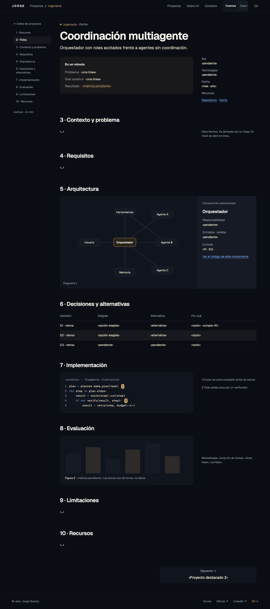
Maqueta 2
B · dawn · 1280 px
Implementación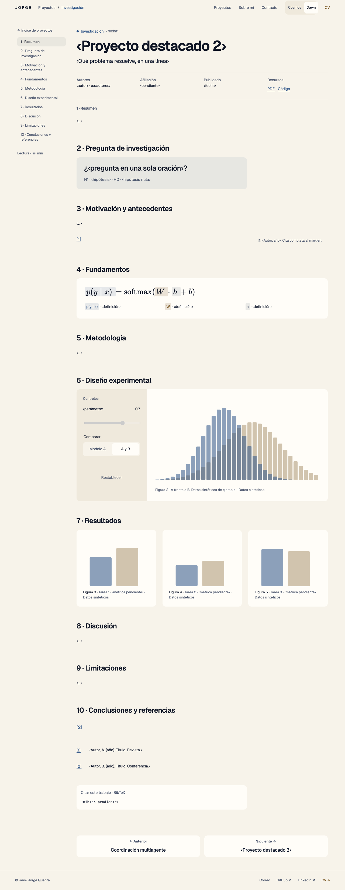
Maqueta 2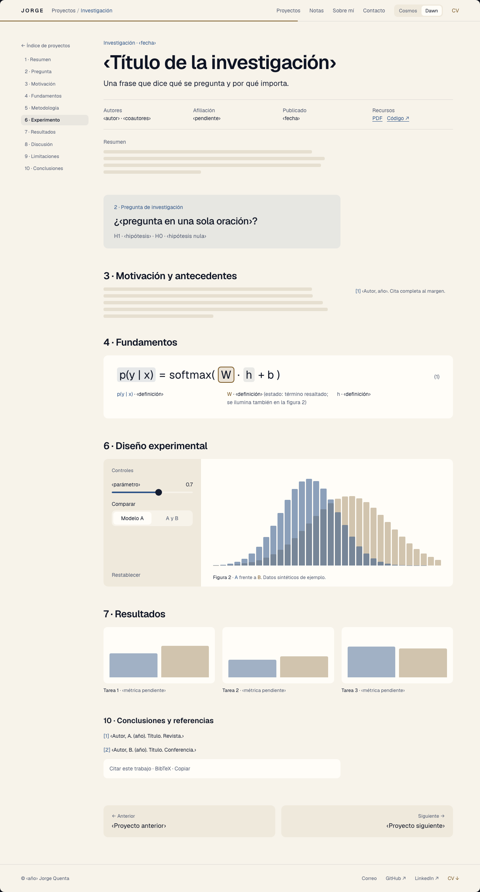
A · cosmos · 834 px
Implementación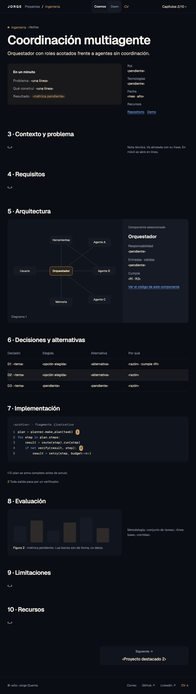
Maqueta 2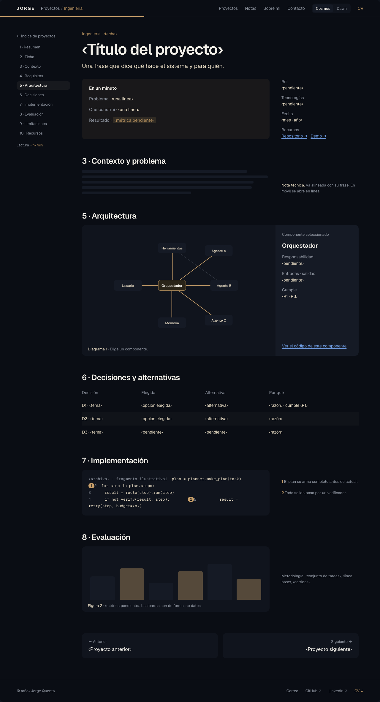
B · dawn · 834 px
Implementación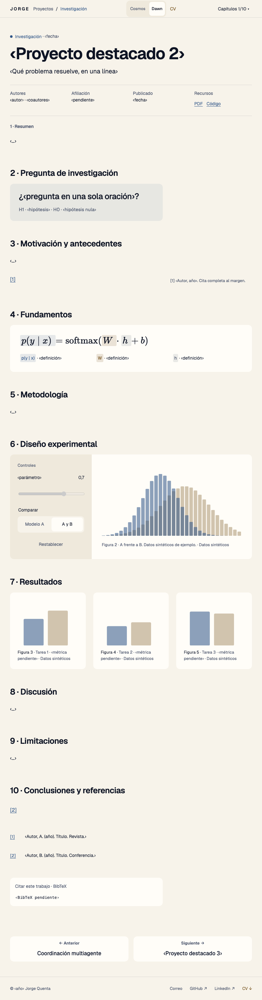
Maqueta 2
A · cosmos · 390 px
Implementación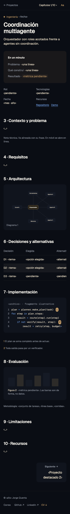
Maqueta 2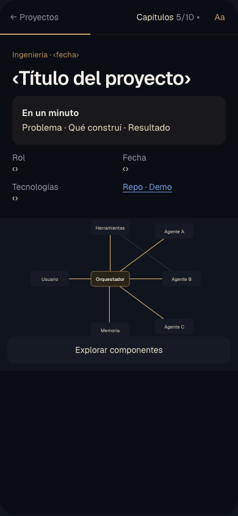
B · dawn · 390 px
Implementación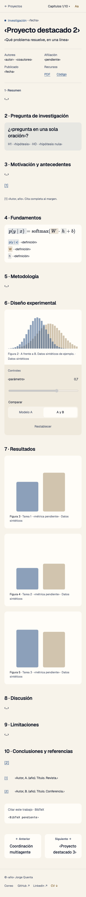
Maqueta 2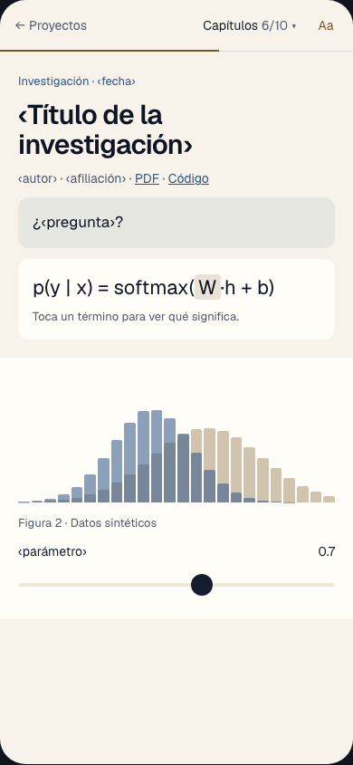
D1 · Ingeniería junto al botón primario
ActualPropuesta temporal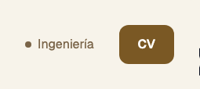
D4 · Hover y seleccionado en Dawn
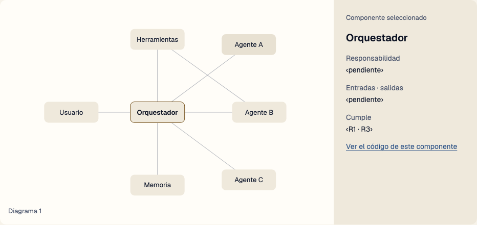
D4 · Pendiente